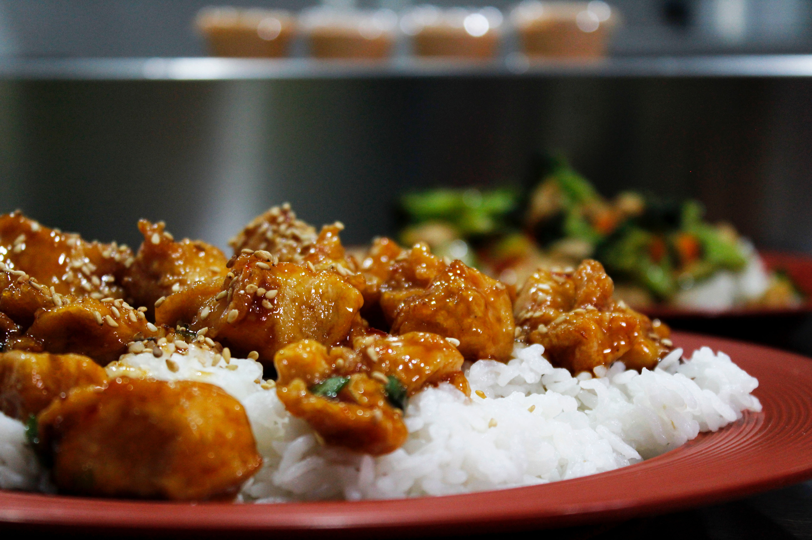

Tiempo de preparación
15 minutos
Arroz
5 minutos
Pollo
10 minutos
De cocción
Tiempo Total:
40 minutos
Ingredientes
Elaboracion
- Limpiamos el arroz unas 3-4 veces hasta que salga limpio, lo dejamos reposar 15 minutos.
- Pasados los 15 minutos ponemos el arroz en un cazo,ponemos el agua y ponemos el arroz a hervir unos 10 minutos a fuego medio bajo.
- Mientras se hace el arroz, vamos haciendo el pollo, ponemos un poco de aceite en la sartén, troceamos el pollo a tamaño de bocado, salpimentamos, encendemos el fuego y añadimos el pollo.
- Mientras se hace el arroz, vamos haciendo el pollo, ponemos un poco de aceite en la sartén, troceamos el pollo a tamaño de bocado, salpimentamos, encendemos el fuego y añadimos el pollo.
- Cuando el arroz haya absorbido todo el agua, retiramos del fuego y dejamos reposar, cuando el pollo esté dorado, le añadimos la salsa teriyaki, removemos bien. Servimos un poco de arroz y el pollo